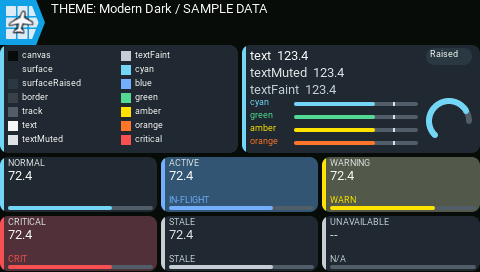
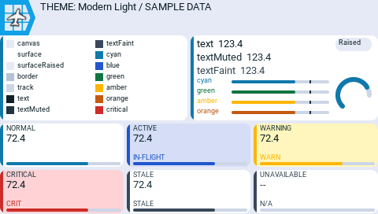

Customize themes
Choose a theme
Choose Theme in the widget settings.
| Mode | Behavior |
|---|---|
| Modern Dark | AeroGrid's dark instrument palette. |
| Modern Light | Pale instrument panels, dark text, and light-background accents and alarm tints. |

Modern Dark palette.

Modern Light palette with dark text and light-background alarm tints.
Theme files and previews
Themes are stored as individual .yml files. Shipped themes live in
/WIDGETS/AeroGrid/themes/; add user themes to /AEROGRID/themes/. Theme names
are the filename stems, and user files override shipped files with the same
name. AeroGrid updates the Theme picker registry automatically; do not edit
/AEROGRID/theme-registry.txt. Use the Palette layout to preview palettes
against fixed samples before applying one to a dashboard.
Select Palette as the layout on a separate App-mode screen. It shows the actual AeroGrid theme and rendering primitives with fixed sample data, without a receiver or telemetry setup. Switch the widget's Theme option between Modern Dark and Modern Light to compare the same samples. Normal, active, warning, critical, stale, and unavailable cards are shown together.
Create a custom theme
Copy one complete file from /WIDGETS/AeroGrid/themes/ to
/AEROGRID/themes/<name>.yml. Set name to the filename stem and provide a
label and version: 1. Define every color token and spacing value; themes do
not inherit from one another. Colors use 0xRRGGBB, such as 0xFFFFFF for
white and 0x000000 for black. accent selects the default semantic accent
(cyan, green, amber, or orange). Put all color values, including optional warningBg,
criticalBg, and activeBg panel-surface backgrounds, in the colors: section.
light and tintSeparation tune light-theme alert surfaces.
correctForContrast controls automatic legibility adjustments; it defaults to
true. Set it to false to preserve all explicitly specified palette values,
including warningBg, criticalBg, and activeBg, without contrast-based
substitution. You are responsible for readability in this mode. Omitted alert
backgrounds still use contrast-checked derived tints, and invalid theme values
are still rejected. Use spaces for YAML indentation, not tabs.
With contrast correction enabled, safeguards may adjust a color to preserve legibility. Review the palette on the Palette layout and on the radio as well as in the simulator. Restart the radio or simulator after adding a theme so the picker reloads.
Chart colors
Optional colors.chartCyan, chartGreen, chartAmber, and chartOrange override
Chart trace and legend-name colors without changing other panels or alarm
accents. colors.chartGrid sets the minute grid and time baseline. When omitted,
the chart inks use their corresponding semantic accents and the grid uses
border, preserving existing custom themes.
Modern Light supplies stronger chart inks and a quiet neutral-gray grid. With contrast correction enabled, explicit chart inks are adjusted to at least 4.5:1 contrast against the panel surface; the grid remains the configured color.